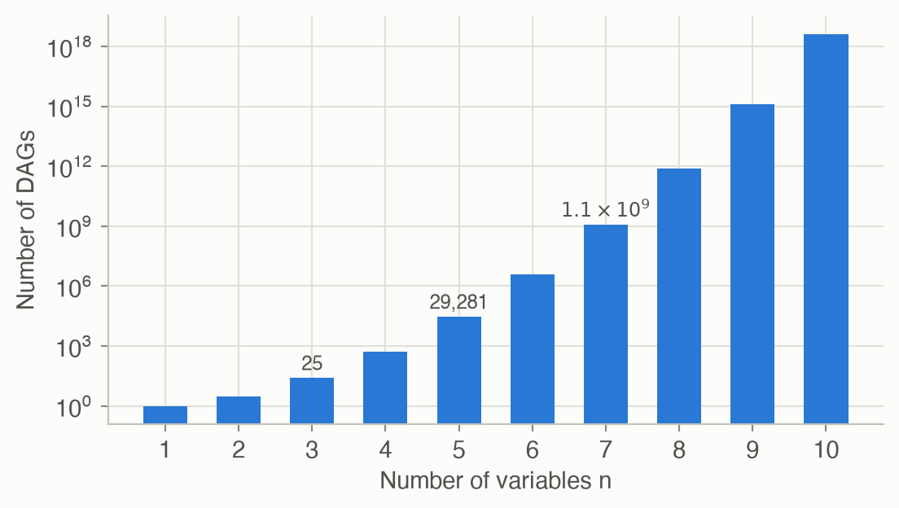
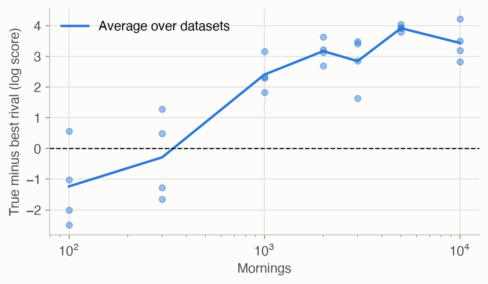
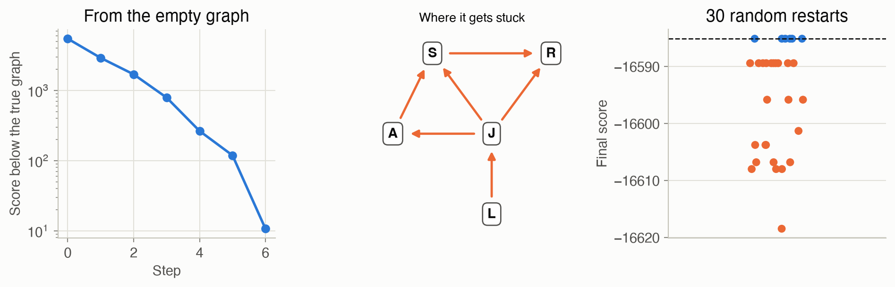

5 · Structure Learning
Part I — Probabilistic Reasoning
Big picture
Where this chapter fits
Chapter 4 learned the numbers of a Bayesian network from data, but it was handed the graph: which variables point to which. Often nobody knows the graph either. Does roadwork affect lateness directly, or only through jams? Is the radio alert caused by the storm, or the other way around? This chapter learns the graph itself from data. That finishes Part I’s toolkit: represent (Ch 2), reason (Ch 3), learn the numbers (Ch 4), learn the structure (here). Chapter 6 then adds decisions on top.
The question: given data about several variables, which pattern of direct dependencies (which graph) best explains it?
The short answer: score every candidate graph by how probable it makes the data, averaged over all its possible parameters. That score automatically penalizes needless edges. Then search the space of graphs for a high score, because there are far too many to try them all.
The key ideas at a glance
Score a graph by how well it predicts the data. The Bayesian score of a graph is the probability of the data under that graph, averaged over every possible set of numbers for its tables, weighted by a prior. It has a vivid equivalent: learn the tables one record at a time, as in Chapter 4, and multiply together the probability you gave each record just before seeing it. A graph with an unnecessary edge has more numbers to learn, so it predicts worse early on and pays for it. A graph missing a real edge predicts worse forever. The score balances fit against complexity without any tuning knob.
The score splits into one term per variable. Each variable’s term depends only on that variable and its parents. So changing one edge changes one or two terms, and a whole search can reuse a precomputed table of terms. That property, called decomposability, is what makes search affordable.
There are far too many graphs to try them all. Five variables allow 29,281 graphs without cycles; ten allow over \(10^{18}\). So we search. K2 takes a variable order and, variable by variable, greedily adds the earlier variable that most improves the score. It’s fast, but only as good as the order. Local search starts from any graph and repeatedly makes the single best edge change (add, remove or reverse) until no change helps. It can get stuck on a local maximum, so it’s restarted from different graphs.
Some graphs can never be told apart. “Storm causes alert” and “alert causes storm” imply exactly the same independences, so no data can distinguish them. Graphs like these are Markov equivalent: they have the same skeleton (edges ignoring direction) and the same v-structures (pairs of unlinked causes sharing an effect, \(a \to c \leftarrow b\)). With the right prior (BDeu), equivalent graphs get identical scores. Searching over whole equivalence classes, drawn as partially directed graphs, avoids wasting steps among equivalent graphs.
Data decides how much structure you can see. With little data, a simpler or look-alike story can outscore the graph that actually generated the data. In the commute example, the radio alert is such a reliable stand-in for the storm that a few hundred mornings often can’t tell “storms cause jams” from “alert days have jams”. In our simulations the true structure scored best in every dataset from about 1,000 mornings on, but not every time before that.
Vocabulary
| Term | Plain meaning |
|---|---|
| Structure | The graph of a Bayesian network: who points to whom |
| DAG | Directed acyclic graph: arrows with no loops |
| Bayesian score | How probable the data is under a graph, averaged over its parameters |
| Decomposable | The score is a sum of per-variable terms |
| K2 | Greedy parent-adding search along a fixed variable order |
| Local search (hill climbing) | Repeatedly take the best single-edge change |
| Local maximum | A graph no single change improves, though better graphs exist |
| Skeleton | The graph’s edges with directions removed |
| V-structure | \(a \to c \leftarrow b\) with \(a\) and \(b\) not linked |
| Markov equivalent | Same independences, so the data can’t tell the graphs apart |
| BDeu prior | Pseudocounts spread evenly so that equivalent graphs score the same |
After this chapter you can
- Compute a variable’s Bayesian score term from counts, and read it as “prediction while learning”.
- Explain why the score resists extra edges without a penalty parameter.
- Learn a graph with K2 or local search, and recognize their failure modes.
- Decide whether two graphs are Markov equivalent, and explain what data can and can’t reveal about edge direction.
Intuition
TipAnalogy
Three analysts each propose an explanation of your morning commutes. One says everything is unrelated; one draws exactly the true causal story; one connects everything to everything. How do you judge them fairly?
Make each one predict the mornings, one at a time, learning as they go. Before each morning is revealed, each analyst states a probability for what will happen; then they see it and update. Multiply up all the probabilities each analyst gave.
- The “unrelated” analyst never catches on that jams make you late, and predicts badly all along.
- The “everything” analyst has so many numbers to learn that it predicts clumsily for a long time, spreading its bets across combinations it has barely seen.
- The analyst with the right structure learns fast and predicts well.
That product is the Bayesian score.
A score is prediction while learning
Take a single yes/no variable, and three records: late, on time, on time. Start with one pseudo-observation of each outcome, as in Chapter 4, and predict each record before seeing it:
- first: “late” has probability \(1/2\);
- then “on time”: \(1/3\), since you’ve seen one “late” plus the pseudocounts;
- then “on time” again: \(2/4\).
The product is \(1/12\), and \(\ln(1/12)\) is exactly this variable’s score term. See Equation 1.
Why extra edges don’t win for free
Give “late” the parent “jam”, and the table splits into two rows, one per jam value, each learned only from its own mornings. If lateness really depends on jams, each row predicts its mornings much better, and the score rises. In the worked example, 30 mornings make the data about \(e^{2.76} \approx 16\) times more probable with the edge. If lateness didn’t depend on jams, splitting would just halve the data per row, each row would learn more slowly, and the score would drop. No penalty had to be added; slower learning is the penalty.
Search: K2 and hill climbing
With five variables, there are 29,281 possible graphs, and every added variable multiplies that enormously (Figure 4). K2 avoids the explosion by fixing an order. Each variable may only take parents from earlier in the order, and it greedily adds whichever one helps most. Give it the causal order (storm, roadwork, jam, late, alert) and it finds the true graph from 3,000 mornings. Give it the order backwards and it builds a wrong, lower-scoring graph. Local search needs no order. It keeps making the best single edge change, but it can reach a graph where every single change hurts even though a better graph exists. Restarting from random graphs is the simple cure. See Figure 6.
What data can’t tell you
Does the storm cause the alert, or the alert the storm? Either way, the two are strongly linked, and nothing else in the data distinguishes the directions. The two graphs make the same independence claims, so they’re Markov equivalent. The collider storm → jam ← roadwork is different. Reversing either arrow changes an independence claim (storm and roadwork would no longer be independent), and the data can see that. So some edge directions are learnable and others aren’t. See Equation 4 and Figure 2.
How much data you need
An alert is 95% likely in a storm and only 2% otherwise, so it’s almost a copy of the storm variable, and a small sample can’t always tell which of the two the jams really depend on. With 100–300 mornings, some other graph often scores best. In one of our simulated datasets, even 1,000 mornings weren’t enough: the best graph linked the jam to the alert instead of the storm. Across datasets, the true structure reliably wins from about 1,000 mornings on (Figure 5). Structure learning finds a graph that explains the data well. Whether it’s the causal truth depends on how much data you have and how distinguishable the alternatives are.
Formalism
The Bayesian score
For variable \(i\) with \(r_i\) values and parent combination \(j\), let \(m_{ijk}\) be the count of records where it takes value \(k\) (Ch 4), and \(\alpha_{ijk}\) the prior’s pseudocount for that cell. Write \(m_{ij0} = \sum_k m_{ijk}\) and \(\alpha_{ij0} = \sum_k \alpha_{ijk}\) for the row totals (ADM §5.1).
\[ \ln P(G \mid D) = \ln P(G) + \sum_{i=1}^{n} \sum_{j} \left[ \ln \frac{\Gamma(\alpha_{ij0})}{\Gamma(\alpha_{ij0} + m_{ij0})} + \sum_{k=1}^{r_i} \ln \frac{\Gamma(\alpha_{ijk} + m_{ijk})}{\Gamma(\alpha_{ijk})} \right] \tag{1}\]
In words. The score of a graph \(G\) for data \(D\) is its prior plausibility, plus, for each variable and each parent combination, a term measuring how well that table row’s counts are predicted when the row’s probabilities are learned from those counts.
Term by term.
- \(\Gamma\) is the gamma function, which extends the factorial: \(\Gamma(n) = (n-1)!\) for whole numbers. Ratios of gammas count how the Dirichlet prior’s pseudocounts combine with the real counts.
- \(\ln P(G)\) is a prior over graphs. With a uniform prior over graphs it’s the same for every graph and can be dropped. That’s what this page does.
- Each bracket is one row of one table. Rows never interact, so the score is a sum of per-variable terms (Equation 2).
Why it holds. The score is \(\ln P(D \mid G)\) with the parameters integrated out: \(P(D \mid G) = \int P(D \mid \theta, G)\, p(\theta \mid G)\, d\theta\). With Dirichlet priors, each row’s integral has a closed form, the ratio of gamma functions above. Equivalently, by the chain rule of probability, it’s the product of the posterior-predictive probabilities of the records taken in any order, which is exactly the “prediction while learning” reading.
\[ \ln P(D \mid G) = \sum_{i=1}^{n} \mathrm{score}\big(x_i, \mathrm{pa}_G(x_i); D\big) \tag{2}\]
In words. A graph’s score is a sum of one term per variable, and each term depends only on that variable and its parents.
Term by term. \(\mathrm{pa}_G(x_i)\) is \(x_i\)’s parent set in graph \(G\). Adding or removing the edge \(a \to b\) changes only \(b\)’s term, and reversing it changes only \(a\)’s and \(b\)’s. So a search can score each possible (variable, parent set) pair once and reuse the numbers: 80 terms cover all 29,281 commute graphs.
Searching over graphs
The space is enormous. The number of DAGs on \(n\) labeled variables follows Robinson’s recurrence (R. W. Robinson, “Counting labeled acyclic digraphs,” 1973; the sequence is A003024 in the OEIS):
\[ a(n) = \sum_{k=1}^{n} (-1)^{k+1} \binom{n}{k}\, 2^{k(n-k)}\, a(n-k), \qquad a(0) = 1 \tag{3}\]
In words. Count graphs by which \(k\) variables have no parents (the sources): choose them, let each point to any subset of the rest, and recurse on the remaining \(n - k\) variables. The alternating signs correct for graphs counted more than once.
Term by term. \(\binom{n}{k}\) chooses the sources; \(2^{k(n-k)}\) lets each of the \(k\) sources point or not to each of the other \(n - k\) variables; \(a(n-k)\) counts the graphs on the rest. The result: 1, 3, 25, 543, 29,281, then about 3.8 million for 6 variables and \(10^{18}\) for 10.
Two searches from the book (ADM §5.2):
- K2 fixes a variable order and, for each variable, greedily adds parents from earlier in the order while the score improves, up to a maximum number of parents. Since parents always come earlier, cycles are impossible.
- Local search (hill climbing) moves, at each step, to the best-scoring graph among those one edge change away (add, remove or reverse, skipping any that creates a cycle), and stops when no neighbor scores higher. It finds a local maximum. Random restarts, simulated annealing and other stochastic variants help it escape.
Markov equivalence
Two graphs are Markov equivalent if they encode the same conditional independences (ADM §5.3). There’s a simple test:
\[ G \equiv G' \iff \mathrm{skeleton}(G) = \mathrm{skeleton}(G') \ \text{ and } \ \mathrm{vstructs}(G) = \mathrm{vstructs}(G') \tag{4}\]
In words. Two graphs are equivalent exactly when they have the same edges (ignoring direction) and the same “two unlinked causes, one shared effect” patterns.
Term by term. The skeleton is the undirected version of the graph. A v-structure is \(a \to c \leftarrow b\) with no edge between \(a\) and \(b\): a collider, from Ch 2. Reversing an edge that isn’t part of a v-structure, and doesn’t create one, leaves the class unchanged. This criterion is due to Verma and Pearl (1990).
Equivalent graphs can’t be distinguished by data, so a good score should give them the same value. The uniform prior (\(\alpha_{ijk} = 1\)) doesn’t quite do that. The BDeu prior does:
\[ \alpha_{ijk} = \frac{\kappa}{q_i\, r_i} \tag{5}\]
In words. Spread a fixed total of \(\kappa\) pseudocounts evenly over each variable’s whole table.
Term by term. \(q_i\) is the number of parent combinations of variable \(i\) and \(r_i\) its number of values, so \(q_i r_i\) is its number of cells. \(\kappa\) (the equivalent sample size) says how many observations the prior is worth. Priors of this kind make the score score-equivalent: Markov-equivalent graphs get identical scores (Heckerman, Geiger and Chickering, 1995, cited in ADM §5.3). This page uses BDeu with \(\kappa = 1\) for its searches.
Searching directly over equivalence classes, each represented as a partially directed graph with the undeterminable edges left undirected, avoids moving between equivalent graphs that all score the same (ADM §5.4). This page doesn’t implement it.
Worked example
Scoring by hand
Thirty mornings: on 20 there was no jam and you were late once; on 10 there was a jam and you were late 5 times. With the uniform prior (\(\alpha_{ijk} = 1\), so \(\alpha_{ij0} = 2\)), Equation 1 gives:
- “Late” with parent “jam”: two rows.
- No jam: \(\ln \frac{\Gamma(2)}{\Gamma(22)} + \ln \frac{\Gamma(20)}{\Gamma(1)} + \ln \frac{\Gamma(2)}{\Gamma(1)} = \ln \frac{1! \cdot 19! \cdot 1!}{21!} = -\ln 420 = -6.04\).
- Jam: \(\ln \frac{1! \cdot 5! \cdot 5!}{11!} = -7.93\).
- The term is \(-13.97\).
- “Late” alone: one row, 24 on time and 6 late: \(\ln \frac{1! \cdot 24! \cdot 6!}{31!} = -16.73\).
The difference is 2.76 in log terms: the data is \(e^{2.76} \approx 16\) times more probable if “late” depends on “jam”. Even from 30 mornings, the edge earns its place.
| Family | Counts | Score term |
|---|---|---|
| Late, parent jam | no jam: 19 on time / 1 late; jam: 5 / 5 | -13.9676 |
| Late alone | 24 on time / 6 late | -16.7282 |
| One variable: late, on time, on time | 2 on time / 1 late | -2.4849 = ln(1/12) |
Is it equivalent?
In the commute graph, flipping storm → alert to alert → storm keeps the skeleton and creates no v-structure, so the result is equivalent. Flipping roadwork → jam to jam → roadwork destroys the v-structure storm → jam ← roadwork, so it isn’t. Figure 2 draws both.
Twin equivalent: True Roadwork-jam reversed equivalent: False
Scores on 3,000 mornings, uniform prior: true -4998.446, twin -4998.569
BDeu prior: true -5001.833, twin -5001.833The uniform prior gives the twins slightly different scores; BDeu gives them the same score, as it should.
Interactive
Build a graph, see its score
Choose a direction, or none, for each pair of commute variables. The explorer adds up the graph’s Bayesian score from precomputed per-variable terms (Equation 2), on 3,000 simulated mornings with the BDeu prior. It reports how the graph compares with the true one, and whether the two are Markov equivalent. Start from the true graph, then try reversing storm–alert (equivalent, same score), reversing roadwork–jam, or adding extra edges.
Algorithms & code
A graph is a dictionary from each variable to the tuple of its parents. Data is a list of complete records, as in Chapter 4.
The Bayesian score
def score_component(counts: np.ndarray, alpha) -> float:
"""One variable's term of the Bayesian score, from its counts m_ijk.
counts has shape (parent values..., own values); alpha is a pseudocount
per cell (a number, or an array of the same shape).
"""
r = counts.shape[-1]
m = counts.reshape(-1, r) # one row per parent combination j
a = np.broadcast_to(np.asarray(alpha, dtype=float), counts.shape)
a = a.reshape(-1, r)
# gammaln(x) = ln Gamma(x). Row j contributes
# ln G(a_j0) - ln G(a_j0 + m_j0)
# + sum_k [ln G(a_jk + m_jk) - ln G(a_jk)],
# where a_j0 and m_j0 are the row totals.
return float(np.sum(gammaln(a.sum(1)) - gammaln(a.sum(1) + m.sum(1)))
+ np.sum(gammaln(a + m) - gammaln(a)))
def bayesian_score(card: dict, parents: dict, data: list,
prior: str = "uniform", kappa: float = 1.0) -> float:
"""ln P(data | graph): the Bayesian score with a uniform graph prior.
prior="uniform" puts one pseudocount in every cell. prior="bdeu" spreads
`kappa` pseudocounts evenly over each variable's table, which gives
Markov-equivalent graphs exactly the same score.
"""
total = 0.0
for x, m in count_table(card, parents, data).items():
if prior == "bdeu":
alpha = kappa / m.size # m.size = parent combos x values
else:
alpha = 1.0
total += score_component(m, alpha)
return total
def family_scores(card: dict, data: list, prior: str = "uniform",
kappa: float = 1.0) -> dict:
"""The score term of every (variable, parent set) pair.
The Bayesian score is a sum of one term per variable, and each term
depends only on that variable and its parents. So a graph's score is
sum(table[x, parents[x]] for x), and whole searches reuse the table.
Parent sets are stored as sorted tuples.
"""
table = {}
nodes = list(card)
for x in nodes:
others = [v for v in nodes if v != x]
for k in range(len(others) + 1):
for pa in combinations(others, k):
# Score just the family x <- pa: a one-variable network.
family = {x: pa, **{p: () for p in pa}}
m = count_table(card, family, data)[x]
alpha = kappa / m.size if prior == "bdeu" else 1.0
table[x, tuple(sorted(pa))] = score_component(m, alpha)
return table
def graph_score(table: dict, parents: dict) -> float:
"""A graph's Bayesian score, summed from precomputed family terms."""
return sum(table[x, tuple(sorted(pa))] for x, pa in parents.items())using ADM, Distributions, Random
# Counts m_ijk for variable x with parent tuple pa: axes (parent values..., own value).
function family_counts(card, x, pa, data)
m = zeros(Int, (card[q] for q in pa)..., card[x])
for r in data
m[(r[q] for q in pa)..., r[x]] += 1
end
return m
end
# ln Γ(n) = ln((n - 1)!) for whole numbers n ≥ 1. With the uniform prior every
# pseudocount is 1, so all Γ arguments are whole numbers and no special functions are needed.
logΓ(n) = sum(log, 1:(n - 1); init = 0.0)
# One variable's term of the Bayesian score, uniform prior (α_ijk = 1).
function score_component(m)
r = size(m, ndims(m))
rows = reshape(m, :, r) # one row per parent combination (Julia is column-major,
# so the last axis becomes the columns)
return sum(logΓ(r) - logΓ(r + sum(rows[j, :])) + sum(logΓ(1 + mjk) for mjk in rows[j, :])
for j in axes(rows, 1))
end
bayesian_score(card, parents, data) =
sum(score_component(family_counts(card, x, pa, data)) for (x, pa) in parents)Searching: K2 and local search
def is_acyclic(parents: dict) -> bool:
"""True if the graph has no directed cycle (repeatedly remove sources)."""
remaining = dict(parents)
while remaining:
# A node whose parents have all been removed can't be on a cycle.
free = [x for x, pa in remaining.items()
if not any(p in remaining for p in pa)]
if not free:
return False # every node waits on another
for x in free:
del remaining[x]
return True
def k2_search(score, order: list, max_parents: int = 2) -> dict:
"""K2: for each variable in order, greedily add the earlier variable
that raises the score most, until no addition helps.
`score` maps a graph to its score. Parents come only from earlier in
the order, so no cycle can form.
"""
parents = {x: () for x in order}
for i, x in enumerate(order):
best = score(parents)
while len(parents[x]) < max_parents:
options = [p for p in order[:i] if p not in parents[x]]
scored = [(score({**parents, x: parents[x] + (p,)}), p)
for p in options]
if not scored or max(scored)[0] <= best:
break # no candidate improves the score
best, p = max(scored)
parents[x] = parents[x] + (p,)
return parents
def neighbors(parents: dict):
"""Graphs one edit away: add, remove, or reverse a single edge."""
nodes = list(parents)
for a, b in combinations(nodes, 2):
for u, v in ((a, b), (b, a)):
if u in parents[v]: # edge u -> v exists
removed = tuple(p for p in parents[v] if p != u)
yield {**parents, v: removed} # remove
yield {**parents, v: removed, u: parents[u] + (v,)} # reverse
elif v not in parents[u]: # no edge either way
yield {**parents, v: parents[v] + (u,)} # add
def local_search(score, start: dict, max_steps: int = 50):
"""Hill climbing: move to the best-scoring acyclic neighbor while that
improves the score. Returns the final graph and the score after each
step. `score` maps a graph to its score.
"""
graph, scores = start, [score(start)]
for _ in range(max_steps):
candidates = [(score(g), i, g)
for i, g in enumerate(neighbors(graph)) if is_acyclic(g)]
best_score, _, best = max(candidates) # i breaks ties, never g
if best_score <= scores[-1]:
break # a local maximum
graph = best
scores.append(best_score)
return graph, scores# No directed cycle: keep removing nodes whose parents are all already removed.
function is_acyclic(parents)
left = Set(keys(parents))
while !isempty(left)
free = [x for x in left if !any(p in left for p in parents[x])]
isempty(free) && return false # every remaining node waits on another
setdiff!(left, free)
end
return true
end
# K2: along the order, greedily add the earlier variable that most improves the score.
function k2_search(score, order; max_parents = 2)
parents = Dict{Symbol, Tuple}(x => () for x in order)
for (i, x) in enumerate(order)
best = score(parents)
while length(parents[x]) < max_parents
options = [p for p in order[1:i-1] if !(p in parents[x])]
isempty(options) && break
with(p) = merge(parents, Dict(x => (parents[x]..., p)))
p = argmax(p -> score(with(p)), options) # the option whose graph scores best
score(with(p)) <= best && break # no option improves the score
parents = with(p)
best = score(parents)
end
end
return parents
end
# Graphs one edit away: add, remove, or reverse a single edge.
function neighbors(parents)
nodes, out = collect(keys(parents)), Dict{Symbol, Tuple}[]
for (i, a) in enumerate(nodes), b in nodes[i+1:end], (u, v) in ((a, b), (b, a))
if u in parents[v] # edge u → v exists
removed = Tuple(p for p in parents[v] if p != u)
push!(out, merge(parents, Dict(v => removed))) # remove
push!(out, merge(parents, Dict(v => removed, u => (parents[u]..., v)))) # reverse
elseif !(v in parents[u]) # no edge either way
push!(out, merge(parents, Dict(v => (parents[v]..., u)))) # add
end
end
return out
end
# Hill climbing: take the best acyclic neighbor while it improves the score.
function local_search(score, start; max_steps = 50)
graph, scores = start, [score(start)]
for _ in 1:max_steps
best = argmax(score, filter(is_acyclic, neighbors(graph)))
score(best) <= scores[end] && break # a local maximum
graph = best
push!(scores, score(best))
end
return graph, scores
endMarkov equivalence
def skeleton(parents: dict) -> set:
"""The graph's edges with directions dropped."""
return {frozenset((p, x)) for x, pa in parents.items() for p in pa}
def v_structures(parents: dict) -> set:
"""Triples a -> c <- b where a and b are not adjacent."""
edges = skeleton(parents)
return {(frozenset((a, b)), c) for c, pa in parents.items()
for a, b in combinations(pa, 2) if frozenset((a, b)) not in edges}
def markov_equivalent(g1: dict, g2: dict) -> bool:
"""Same skeleton and same v-structures: the graphs encode exactly the
same conditional independences, so no data can tell them apart."""
return (skeleton(g1) == skeleton(g2)
and v_structures(g1) == v_structures(g2))# Edges with direction dropped: each edge becomes the set {parent, child}.
skeleton(g) = Set(Set([p, x]) for (x, pa) in g for p in pa)
# Colliders a → c ← b whose two causes a and b are not linked.
function v_structures(g)
edges = skeleton(g)
return Set((Set([pa[i], pa[j]]), c) for (c, pa) in g
for i in eachindex(pa) for j in (i+1):length(pa) if !(Set([pa[i], pa[j]]) in edges))
end
markov_equivalent(g1, g2) = skeleton(g1) == skeleton(g2) && v_structures(g1) == v_structures(g2)Run them on the commute data
mornings = sample_dataset(COMMUTE, 3000, np.random.default_rng(1))
table = family_scores(COMMUTE.card, mornings, prior="bdeu") # all 80 family terms
score = lambda g: graph_score(table, g)
k2_right = k2_search(score, ["S", "R", "J", "L", "A"]) # the causal order
k2_wrong = k2_search(score, ["L", "J", "A", "S", "R"]) # the order reversed
empty = {x: () for x in COMMUTE.parents}
found, steps = local_search(score, empty)# Direct sampling, as in Ch 3 and Ch 4.
function topological_order(parents)
order = Symbol[]
while length(order) < length(parents)
for (x, pa) in parents
!(x in order) && all(p in order for p in pa) && push!(order, x)
end
end
return order
end
function sample_dataset(bn, m, rng)
order = topological_order(bn.parents)
return map(1:m) do _
r = Dict{Symbol, Int}()
for x in order
r[x] = rand(rng, Categorical(bn.cpt[x][(r[q] for q in bn.parents[x])..., :]))
end
r
end
end
commute = commute_network()
mornings = sample_dataset(commute, 3000, MersenneTwister(1))
@assert isapprox(score_component([19 1; 5 5]), -13.9676; atol = 1e-4) # the hand example
score(g) = bayesian_score(commute.card, g, mornings)
truth = commute.parents
@assert markov_equivalent(k2_search(score, [:S, :R, :J, :L, :A]), truth)
twin = merge(truth, Dict(:A => (), :S => (:A,)))
@assert markov_equivalent(truth, twin)
@assert !markov_equivalent(truth, merge(truth, Dict(:J => (:S,), :R => (:J,))))
found, steps = local_search(score, Dict{Symbol, Tuple}(x => () for x in keys(truth)))
@assert all(diff(steps) .> 0) # every step strictly improves the scoreK2, causal order: R→J, S→J, J→L, S→A
equivalent to truth: True
K2, reversed order: L→J, J→A, A→S, J→S, J→R, S→R
equivalent to truth: False, score -8.68 vs truth
Local search from the empty graph (5 steps): A→S, S→J, R→J, J→L
equivalent to truth: True
NoteReading the Julia code (for Python programmers)
reshape(m, :, r)turns the count array into a matrix withrcolumns. Because Julia stores arrays column by column, the last axis, the variable’s own value, becomes the columns, just asm.reshape(-1, r)does in NumPy’s row-major layout.argmax(f, xs)returns the element ofxsthat maximizesf, like Python’smax(xs, key=f).with(p) = …inside a loop defines a small local function (a closure), like a Pythonlambda.Set(Set([p, x]) …): a set of 2-element sets represents undirected edges, like a set offrozensets in Python.merge(d, Dict(k => v))returns a new dictionary withkreplaced, like{**d, k: v}.
Results
The space of graphs

How much data does the true structure need?
For each of 4 simulated datasets at each size, Figure 5 scores all 29,281 graphs and compares the true graph (or its equivalent twin) with the best graph that isn’t equivalent to it. Above zero, the truth wins.

Search in action
On 3,000 mornings, local search from the empty graph finds the true structure’s class. On 10,000 mornings, the same search from the empty graph gets stuck. It ends on a graph that scores 10.7 below the truth, where no single edge change helps (Figure 6). Restarting from random graphs fixes it: 6 of 30 restarts reach the true class.

Solved problems
Problem 1: a score term by hand. A variable was observed 4 times: yes, yes, no, yes. Compute its score term with the uniform prior, both from Equation 1 and by sequential prediction.
TipSolution
Sequentially, starting from one pseudocount per value: yes \(1/2\), yes \(2/3\), no \(1/4\), yes \(3/5\). The product is \(\frac{1 \cdot 2 \cdot 1 \cdot 3}{2 \cdot 3 \cdot 4 \cdot 5} = \frac{6}{120} = \frac{1}{20}\).
By the formula, with 3 yes and 1 no: \(\ln \frac{\Gamma(2)}{\Gamma(6)} + \ln \frac{\Gamma(4)}{\Gamma(1)} + \ln \frac{\Gamma(2)}{\Gamma(1)} = \ln \frac{1 \cdot 3! \cdot 1!}{5!} = \ln \frac{6}{120} = \ln \frac{1}{20} \approx -3.00\).
Same answer. The order of the records doesn’t matter, only the counts.
Problem 2: equivalent or not? Which of these are Markov equivalent to \(X \to Y \to Z\)? (a) \(X \leftarrow Y \leftarrow Z\); (b) \(X \leftarrow Y \to Z\); (c) \(X \to Y \leftarrow Z\).
TipSolution
All four graphs share the skeleton \(X - Y - Z\). The original has no v-structure.
and (b) have none either, so both are equivalent: all three say \(X \perp Z \mid Y\).
is a v-structure (\(X\) and \(Z\) unlinked causes of \(Y\)), so it’s not equivalent: it says \(X \perp Z\) with nothing observed, and \(X\) and \(Z\) dependent once \(Y\) is known.
Of the 25 DAGs on three variables, 11 equivalence classes remain, which you can check with markov_equivalent and all_dags.
Problem 3: why K2 needs a good order. In the run above, K2 with the reversed order (late, jam, alert, storm, roadwork) produced a wrong graph. Explain why it can’t find the true graph from that order.
TipSolution
K2 only allows parents that come earlier in the order. In the true graph, storm and roadwork are parents of jam, but in the reversed order they come after jam, so those edges are forbidden. Even the true graph’s equivalence class needs the v-structure S → J ← R, which requires both arrows into jam. K2 can only approximate the dependencies with edges pointing the “wrong” way, which costs score. Orders are often taken from domain knowledge (causes before effects), or several random orders are tried.
Problem 4: counting DAGs. Use Equation 3 to compute \(a(3)\) from \(a(0) = 1\), \(a(1) = 1\) and \(a(2) = 3\).
TipSolution
\[ a(3) = \binom{3}{1} 2^{2} a(2) - \binom{3}{2} 2^{2} a(1) + \binom{3}{3} 2^{0} a(0) = 3 \cdot 4 \cdot 3 - 3 \cdot 4 \cdot 1 + 1 = 36 - 12 + 1 = 25. \]
Recap
- The Bayesian score (Equation 1) rates a graph by how probable it makes the data, with parameters averaged out. Equivalently, it measures how well the graph predicts each record while learning from the ones before. Why it matters: it compares structures of different complexity fairly, with no tuning knob. The same “marginal likelihood” idea is used to compare models throughout statistics and machine learning.
- The score is decomposable (Equation 2): one term per variable and its parents. Why it matters: local changes are cheap to score, which is what makes any search feasible.
- The space of graphs grows super-exponentially (Equation 3), so we search. K2 is fast but needs a good variable order; local search needs no order but finds local maxima, which restarts help escape. Why it matters: the same greedy-search trade-offs recur in policy search (Ch 10) and whenever a space is too big to enumerate.
- Markov-equivalent graphs (Equation 4) can’t be distinguished by data; a BDeu prior (Equation 5) scores them identically. Why it matters: learned edge directions are only meaningful up to equivalence. Claiming “the data shows A causes B” needs more than a structure score.
- How much structure you can recover depends on data. With too little, a simpler or proxy explanation wins. Why it matters: a learned structure is a hypothesis about dependencies, not proof of causation. Check how robust it is to the amount of data.
Cheat sheet & connections
| Name | Formula | Ref |
|---|---|---|
| ★ Bayesian score | \(\ln P(G) + \sum_{i,j} \Big[\ln \frac{\Gamma(\alpha_{ij0})}{\Gamma(\alpha_{ij0} + m_{ij0})} + \sum_k \ln \frac{\Gamma(\alpha_{ijk} + m_{ijk})}{\Gamma(\alpha_{ijk})}\Big]\) | Equation 1 |
| Decomposability | \(\ln P(D \mid G) = \sum_i \mathrm{score}(x_i, \mathrm{pa}(x_i))\) | Equation 2 |
| Counting DAGs | \(a(n) = \sum_k (-1)^{k+1} \binom{n}{k} 2^{k(n-k)} a(n-k)\) | Equation 3 |
| ★ Markov equivalence | same skeleton and same v-structures | Equation 4 |
| BDeu prior | \(\alpha_{ijk} = \kappa / (q_i r_i)\): score-equivalent | Equation 5 |
Which search? Use K2 when you trust a variable order (causes before effects). Use local search with random restarts when you don’t. Search over equivalence classes when equivalent graphs are slowing the search down. Exhaustive search only works for about five variables or fewer.
Common pitfalls
- Reading learned arrows as causation. Within an equivalence class, directions are arbitrary. Even across classes, with limited data a proxy variable can win.
- Mixing priors when comparing. The uniform prior can give equivalent graphs different scores; use BDeu when directions shouldn’t matter.
- Trusting one local search run. It stops at the first local maximum. Restart, or use stochastic moves.
- Too many parents. Each extra parent doubles a binary variable’s table. Cap the number of parents, as K2 does, or the counts get too thin.
Connections
- Ch 2 · Representation defines the graphs and v-structures (colliders) used here.
- Ch 4 · Parameter Learning supplies the counts and Dirichlet priors inside the score.
- Ch 6 · Simple Decisions builds decision networks on learned or designed structures.
- Ch 10 · Policy Search uses the same local-search ideas to search over policies instead of graphs.
- Appendix C · Computational Complexity: why finding the best structure is NP-complete, which is why this page searches locally.